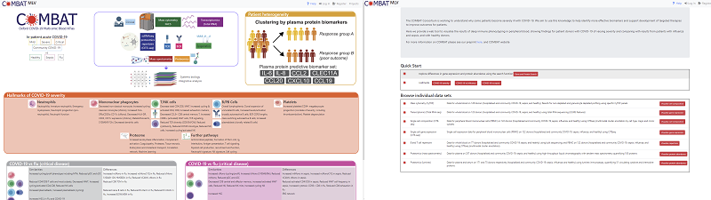
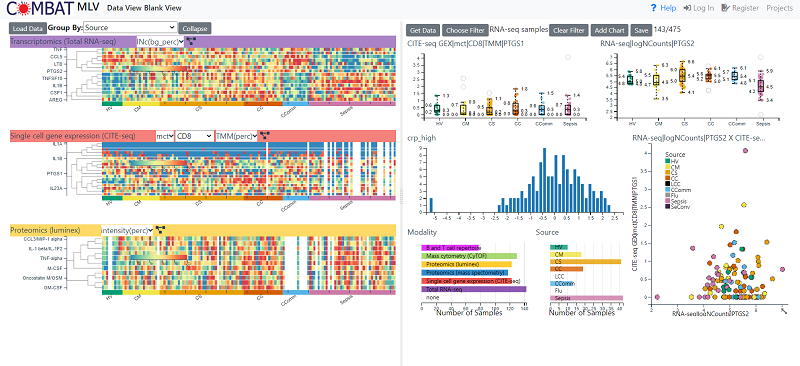
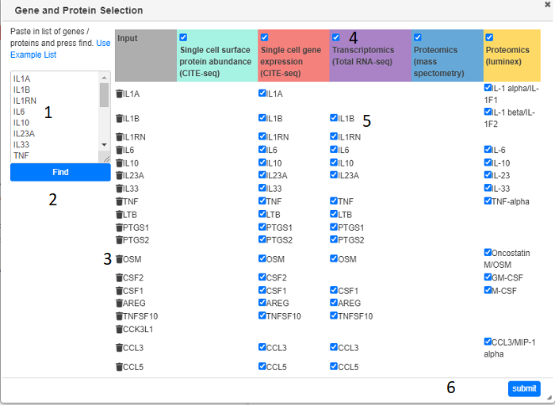
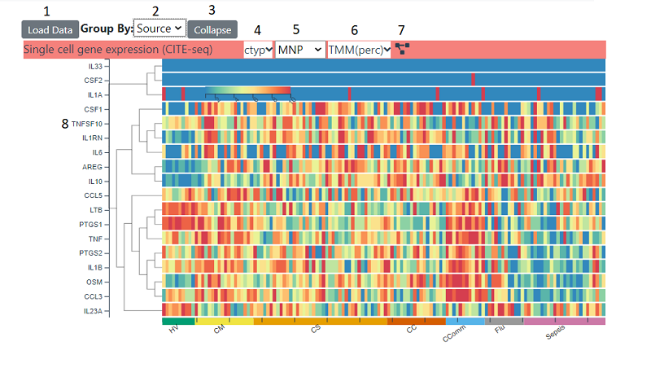
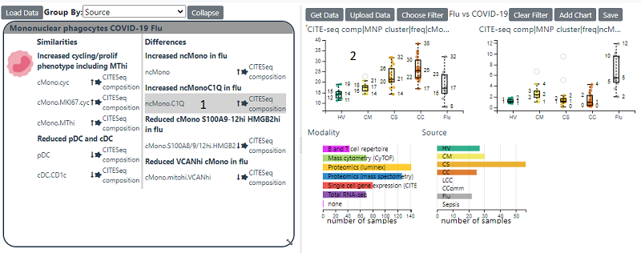
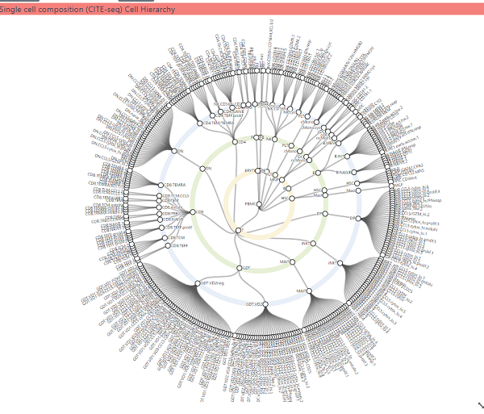
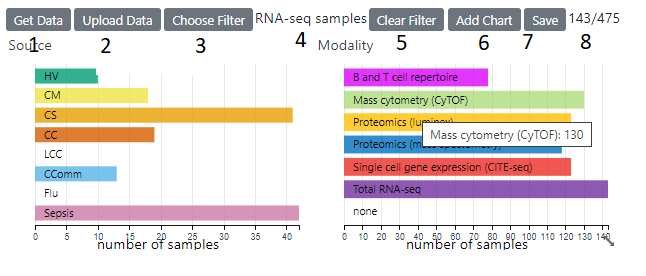

Combat MLV¶
Summary¶
Combat MLV is built on top of MLV but instead of simultaneously viewing multiple genome locations, it allows the visualization of multiple experimental observations from the same samples as produced by the COMBAT project. The vast quantity and disparate types of data that has been generated by the COMBAT project creates many challenges to visualizing the data as a whole. For example, some experiments us|ed bulk tissue, whereas others used single cell techniques. In addition, gene expression, protein abundance. percentage cell types are quite different types of measurements, having different properties such as scales and thus are difficult to compare. There is also a lot of missing data with a relatively small number of samples having measurements from all modalities. To address these issues the following was implemented in COMBAT-MLV:-
Data from single cell experiments (modalities) is collapsed to sample/tissue (pseudobulk) to allow comparison with bulk experiments
Data has been binned into percentile bins so each feature will have a relative value from 1 to 10, which allows easy comparison between modalities. However raw data is also available if required
Gene/proteins have been matched between modalities so bulk/single cell gene expression can be compared to protein measurements (Luminex/Mass Spectrometry)
There are many filters that can be applied to the data so that depending on which modalities are being viewed the amount of missing data is kept to a minimum in each view
Features¶
Note
In the context of COMBAT-MLV, an item of data is known as a feature and is comprised of the following five levels:
Modality(Cluster Level)| (Cluster) | datatype |name
Modality The actual experiment e.g., CITE-seq GEX, RNA-seq, CYTOF
Cluster Level The level at which single cell data has been collapsed e.g major/minor cell type (not present in bulk modalities)
Cluster The actual cluster e.g. cell type (not present in bulk modalities)
DataType The type of data e.g. raw counts, reads per million, percentile bins
Name The actual name of the feature bing measured e.g gene/protein, % cell type
Getting Started¶
Specific views can be created by searching for genes/proteins or selecting data from different modalities or loading specific hallmarks. Predefined views can be accessed from the main home page or from a clickable summary figure There are two panels in the display. The right-hand panel displays summary of the data heat maps (one per modality) as well as hallmarks. The left hand panel displays individual ‘features’
Left Hand (Summary) Panel¶
Loading Data¶
The load data button brings up four choices
Paste Gene List - (see) Allows you to type to paste gene names and will try and find matches is in each modality. The genes will then be shown in a heatmap
Load Hallmark - loads a text box with a list of distinguishing feature
Load other data types - Load data sets from modalities that are nor protein/gene based such as % cell types
Load Dendogram - Loads data that can be displayed hierarchically. At the moment the only option is the cell designation hierarchy derived from the CITE-seq Data
Loading Gene/Protein data¶
Clicking on Load Data > Paste Gene list will bring up the Gene and Protein Selection dialog. Gene names (or EMBL Ids) need to be typed or pasted in the text box and the the the Find button (2) clicked. After a short search any modality containing data for the gene or corresponding protein will be shown in the main table. Modalities (columns) can be removed by un-checking the appropriate check box (4). Genes (rows) can be removed with the bin icon (3) or individual gene/modalities can be unchecked. Pressing the submit button will load in all the requested data and display appropriate summary heat maps (one per modality)
Heat Maps¶
Heat maps can show a range of data . The samples on the x axis are grouped into categories (initially source) . This can be changed with the source dropdown (2), the choices available depend on which data has been loaded into the right hand panel. For a continuous field categories are split into four equal bins spanning the data range. The heatmap can be collapsed into the displayed categories , whereby an average is shown instead of each individual sample, by using the collapse button (3). Depending on which which modality the heatmap is showing, there will be a number of options in the title bar. For single cell modalities, the cluster level (4) and cluster i.e. cell type (5) can be changed. For all heatmaps, the type of data can be changed (6). Which types are available depends on the modality , but clicking on the dropdown will give you options and explanations about each type. The rows can be re-clustered at any time by clicking the cluster icon (7)
Data can be transferred to the right hand panel by clicking on the x axis labels and that feature will then be transferred across and a box plot will be shown. The data will be whatever cluster/cluster level and data type is currently being displayed in the heat map. The feature can then be combined with other features or sample associated data in a range of charts. For single cell data a heatmap consisting of expression for all cell types of the currently selected cluster level will also be added to the left-hand panel
Hallmarks¶
Hallmarks show Features which have been shown to differentiate between COVID-19 and Sepsis/Flu or between the different severities of COVID-19 infection. By clicking on a feature in the hallmark will load it into the right hand panel and generate a box plot of that feature
Cell Type Dendogram¶
This shows the three hierarchical cell type composition derived from the CITE-seq gene expression analysis. Panning and zooming can be achieved with dragging the mouse and using the mouse wheel respectively. Clicking on a white circle (cell type) will load data for that cell type into left hand panel. The number of levels can be altered by clicking on the cog icon and changing the level in the dialog which appears.
Right Hand (Feature) Panel¶
This panel shows individual feature and other data associated with samples. By default, row charts the sample’s source and the modality is shown. A sample can have data from more then one modality To load sample associated data, click on he Get Data button (1) and you can then select from a range of available fields.
Changing Filters¶
The current filter (4) is displayed and can be changed with the Choose Filter button . The current number of samples and the total are are displayed on the right (8) . Changing the filter will update all the charts and the heatmaps to reflect the currently filtered samples. A Filter can also be applied (on top the selected base filter) by clicking on category in a row/pie chart or selecting a range/area in a histogram/scatter plot. Clicking the reset button on a chart will then remove that chart’s filter
Adding New Charts¶
New Charts for any of the current fields can be added with the Add chart button (6) This will bring up a dialog where you select the type of chart and fields to be used in the chart . The type of charts are
scatterplot - two continuous fields can be plotted against each other
boxplot - a continuous field can be chosen for the y axis e.g. a feature and discrete field to the x axis e.g source
histogram - the distribution of continuous field is displayed
row chart/pie chart the categories in a discrete field are displayed
Saving the View¶
Saving the view will save all the loaded data, current filter and charts. To achieve this click on the save button (7). If you do not own the view you can select ‘save as’, which will clone the current view and save it under a different name. You can also share the view with another user or make it public. The url will always point to this link or you can access it from my projects in the top nav bar